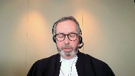
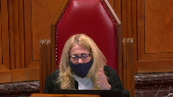
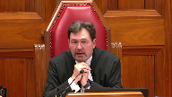
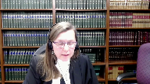
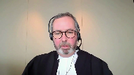

Peter Khill v. Her Majesty the Queen
This transcript was made with automated artificial intelligence models and its accuracy has not been verified. Review the original webcast here.
Justice Martin (00:00:02): D’accord, d’accord!
Justice Wagner (00:00:31): In the case of Peter Cahill, against Her Majesty the Queen, for the appellant Peter Cahill, Michael W. Lacey, Jeffrey R. Manishen, for the intervener, Criminal Lawyers Association of Ontario, Ian R. Smith, pour l’intervenant, l’Association québécoise des avocats et avocates de la défense, Vincent R. Paquet, for the respondent, Her Majesty the Queen, Susan L. Reed, and Rebecca Schwartz.
Mr. Lacey.
Speaker 1 (00:01:11): Yes, good morning Chief Justice, Justices, and may it please the Court.
There are three routes to restoring the jury’s acquittal in this case, and I propose to deal with each of the routes in oral argument this morning.
And the first position of the appellant is that the Court of Appeal erred in its interpretation of section 34 sub 2 sub c of the Criminal Code, and in particular Parliament’s direction to instruct the jury on the question of the role of the person in the incident.
And properly interpreted in our submission, there was no basis to specifically instruct the jury as suggested by the Court of Appeal for Ontario.
But secondly, if you accept the Court of Appeal’s interpretation as urged upon you by the respondent, the charge to the jury here met the functional requirement because the jury did get instructed to consider the entirety of the appellant’s conduct from the outset of the incident as a continuum from when he first woke up through to the point in time of the deadly and tragic encounter with the deceased in this case.
And the third point, which really is somewhat related to the second one, is that contrary to the Court of Appeal’s conclusion, even if the judge ought to have averted to section 34 sub 2 c of the Criminal Code, there was a very significant strategic reason why the Crown did not request that the trial judge do so.
And because if the trial judge was to revert to that in the manner in which the respondent suggests, in other words, as a neutral factor in assessing the issue of self-defense, it would have required the trial judge to outline for the jury all of the conduct that the appellant engaged in, which was perfectly and lawfully justified.
And in particular, and I’ll return to this when I deal with this during the end of my argument, but he would have been required to instruct the jury to consider section 494 sub 2 of the Criminal Code, which enabled the appellant, gave him the lawful authority.
It was one of those provisions that were amended as part of the self-defense provisions, but it gave the appellant the lawful authority to arrest someone on his property committing an indictable offense.
And one of the amendments to the Criminal Code in that regard was to include subsection 4 of section 494 of the Criminal Code, which in turn incorporates section 25 of the Criminal Code, which is the general self-defense or defense of purpose provision, which would allow the appellant under a threat of lethal force to use lethal force in response.
So our overall submission with respect to the third point is that an instruction that averted to section 342 sub c of the jury could not have in any way assisted the Crown in this case, such that it could not have affected the result in the Gravelin or Barton sense that that’s used by this court.
And I know the courts had the benefit of being briefed on the issues in terms of the extensive facta that have been filed, but I do think it’s important to just highlight very briefly, if I might, certain factual aspects of the case that the jury in turn used to resolve two fundamental legal questions.
The first two legal questions that arise in self-defense under section 34 sub 1 of the Criminal Code, these issues were resolved in the appellant’s favor.
And you recall from the material before you that the appellant and his common law partner were in their home in the middle of the night sleeping.
They lived in what was described by police officers, not just by the appellant or by his common law partner, but was described by police officers as a rural area that was not densely populated.
They were surrounded by open fields and were isolated.
This was not a suburb.
This was not an urban center.
Sure, there was a box store within a couple of kilometers of where they lived, but this was not a location where there were other neighbors around or other people nearby.
There was no expectation that if they had contacted the police that they’d attend quickly.
The week before the incident, the tragic incident, while she was at home, the appellant’s partner had heard someone trying to access the residence through their key lock, through their keypad.
When the appellant’s partner woke up on the early morning in question, she heard a sound outside, which she described as loud knocks, and she woke up the appellant because she was concerned, once again, that someone might be trying to get into their house or do something to them.
The appellant looked out the bedroom window and could see that someone had accessed his pickup truck because the interior light was on.
His evidence was he didn’t know whether there was one, two, or possibly even more people who were now on his property.
He knew that he kept a knife inside that truck, and the knife was subsequently found in the truck.
The appellant kept a large knife in that truck for hunting purposes, and one of the things that ran through his mind was the concern that someone who had accessed the truck could gain access to it.
There was a garage door opener inside that truck that would have gained access to the garage, and in turn, according to the evidence of the common-law spouse, through some plywood could easily have gained access to the residence.
So the appellant was so concerned in our submission that of this potential threat, he didn’t take the time to get dressed.
He immediately went into defensive mode.
He was a lawful owner of a shotgun that he had stored lawfully in his bedroom.
He grabbed that shotgun and loaded it because he wanted to investigate the threat on his property.
He went outside in his boxer shorts, t-shirt, and bare feet in the early February morning.
And as I mentioned at the outset, quite apart from the threat that was being posed, the unknown threat, in fairness, the appellant didn’t know what the nature of the threat was outside, although he had some experience dealing with threats.
There was evidence adduced before the jury of some of his military training, but the appellant also, as I’ve indicated, was authorized by law pursuant to Section 494 sub 2 of the Criminal Code to investigate the crime being committed on his property.
And this was not a defensive property case, but the fact that this was occurring on his rural property in our submission, the fact that there had been these incidents in the week before, obviously informed the context of what transpired.
So, when you heard—
Justice Rowe (00:08:19): Is it your submission that in order to facilitate a citizen’s arrest, you just walk out your front door with a loaded shotgun?
Is it as simple as that?
Speaker 1 (00:08:34): my position to the court, Justice Roe, and thank you for the question, is that there’s nothing unlawful about not knowing exactly what the threat is that’s being posed to you on your property to arm yourself with a gun that you lawfully own for defensive purposes.

Yes, that’s my position to you.
And that doesn’t mean you’re going to use the gun for the purposes of affecting the arrest other other than the show of force.
And there would be nothing unlawful, absolutely lawful conduct to use the gun in that manner.
Justice Rowe (00:09:09): It seems to me you’re urging on us an interpretation of the provisions of the criminal law that would be very comfortable for people in Texas.
I’m not sure if it’s comfortable for people in Canada.
Speaker 1 (00:09:23): Well, you know, I wouldn’t turn to Texas as my model for the self-defense provisions, but what I would do is turn to what Parliament was intending to do when they amended the Criminal Code provisions.
And one of the things we know about the amendments, there’s no question about the amendments, is they arose from the David Chen case in Toronto and that was a pure property arrest scenario.
But one of the things that Parliament intended at the time was to reinforce the idea that when someone was in their home in particular, when they’re on their property or in their home and there’s a threat or someone’s committing an indictable offense, that they were lawfully entitled, they were given lawful authorization under section 492 of the Criminal Code to effect an arrest in that scenario effectively in the same way as if they were a peace officer.
So in my submission, I’m not asking you to apply that someone’s on your property, you can go out and shoot them if that is in fact the law of Texas.
I’m not asking you to apply that scenario.
What I am asking you to accept for the purpose of the argument, and I say as a matter of law, is that all of the conduct leading up to the fatal encounter in this case, there was nothing about what the appellant did that was unlawful.
Sorry, Mr. Lacey.
Sorry, Justice Abela.
Justice Abella (00:10:43): Is that the test, whether it was lawful?
I thought that the provisions that have been set out dealt with sub c was reasonable in the circumstances, not lawful in the circumstances, and of course the provision we’re dealing with here also has a reasonable, the person’s role in the incident.
So I’m not clear why you keep using the word lawful, which is a conclusion, rather than directing us to what you say is reasonable in the circumstances.
Speaker 1 (00:11:18): I quite agree that the directive under Section 34.1c, which is the third self-defense question, is whether or not the use of force by the accused was reasonable in all of the circumstances.
I accept that that is in fact obviously the test, it’s prescribed by Parliament.
And then under Section 34.2, when the Parliament describes certain things that in certain circumstances the jury needs to be alerted to, and if we turn to the text, it might be helpful.
I’ve included the English version only, and my apologies for that, in our condensed book at tab 5.
But you’ll also find the French version in our factum and also contained in the Respondent’s Compendium.
But if you look at the wording of Section 34.1c, obviously it’s the act committed is reasonable in the circumstances.
And then Parliament went on to direct that in determining whether the act committed is reasonable in circumstances, the court shall consider the relevant circumstances of the person.
I say the word relevant also applies to the next two categories, be the relevant circumstances of the other parties and the relevant circumstances of the act, including but not limited to the following.
And then we have the prescribed things that are to be considered, including the role in the incident.
But one of the things in terms of the appropriate interpretation of Section 34.2 of the Criminal Code, when read in context in our submission, subsection C of 34.2c can’t simply be consider everything that the accused did or didn’t do.
I mean, the jury is already directed under Section 34.1c to determine whether the act was committed is reasonable in the circumstances.
In other words, they’re already instructed to look at everything that happened leading up to the fatal encounter, at least in this case, the fatal encounter giving rise to the self-defense claim.
And our position before the court is that in articulating the role of the accused in the incident or the person’s role in the incident, Parliament was speaking to something else, not just simply everything that happened, but they’re trying to highlight that there’s going to be circumstances where the person who claims self-defense played a certain role in bringing about the encounter that is a relevant circumstance in assessing the overall reasonableness of the use of force.
Justice Abella (00:13:56): Do you think it’s relevant? Go ahead.
Sorry, it’s just a follow-up.
Do you think in that context, and I’m happy to see you’ve moved away from the lawfulness framework, in those circumstances, the jury did in fact ask a question about reasonableness, and the answer it got from the judge, from the trial judge, was connected to the act itself.
So my question to you is, do you see the factor set out in 34-2 as permitting the jury to consider the events?
Do you see incident as including the events leading up to the act of shooting, or is it limited only to the act of shooting?
Speaker 1 (00:14:42): I would, I’m sorry, I would submit to the court, Justice Sebella, that 34-1C, which said is, which directs that the act is, if the, was the act committed, sorry, let me rephrase that, if the act committed is reasonable in the circumstances relates to not just the event itself or the assault of event itself, and I draw comfort in making that submission to you, in part from Justice Moldaver’s decision in Pintar.
In other words, you don’t isolate just the assault of event itself.
So it is quite appropriate to look at what happened leading up to the assault of event.
And in this case, of course, much of the Crown’s case was about what happened leading up to the assault of event.
And if you look at the other, some of the other criteria under section 34 sub 2, they direct the jury to consider things other than the actual assault of event itself for which self-defense is claimed, the history of the interaction or communication between the parties, for example.
So I say to the court that yes, reasonable in the circumstances looks at the entirety of the transaction, if I could put it that way.
Justice Moldaver (00:15:55): Sorry, Mr. Lacey, I don’t understand from you that you are, when you use the word unlawful, I was understanding it to mean more than just actually unlawful, although unlawful could play a part if, for example, the accused assaulted the victim first unlawfully, in which case 34, 1, and 2 would have been out under the old provisions.
But if I understand your position is that what’s happened here is that rather than sort of having these what I’ll call morally blameworthy aspects of the accused conduct foreclose the defense of self-defense in some cases, Parliament has not abandoned them.
They’re still looking for conduct that could be considered morally blameworthy in terms of leading up to the main act.
It could be an unlawful act by the accused in terms of starting the assault.
It could be provocation.
It could be that the accused is the instigator.
It could be that the accused is acting out of vengeance.
It could be that the accused is being vigilante.
It could be a number of things that the triers of fact would be able to take into account.
But if I understand your position is it’s not that Parliament intended to make a wholesale change.
They just actually enhanced the provision.
They widened it a bit so that even if they thought there was some provocation, it would still be open to them to, for example, to allow the defense of self-defense.
And that’s what the legislative, all the legislative context behind this seems to suggest that.
Speaker 1 (00:17:43): I couldn’t say it better myself
and I won’t try to, but that’s absolutely our position.
In other words, if I can just add to that and try and supplement it, there’s something about the role the accused played in the incident that could taint the moral culpability in relation to the assault of event.
And I quite agree that under the old provisions, obviously 34-1 and section 35 and 34-2, you had this confusion among, well, if it’s provocative conduct, you have to figure out what section of the criminal code you’re dealing with.
And instead, parliament abandoned those distinctions and said, look, we’re not going to limit or eliminate self-defense, even if the accused does something unlawful, like an unlawful assault, or if the accused provokes the assault in a significant way or instigates the assault, but doesn’t anticipate it’s going to rise to the level of becoming lethal.
We’re not going to eliminate the ability to raise self-defense in those circumstances, but we’re going to direct trial judges to instruct the jury in those types of circumstances.
You have to consider the role of the person in the incident.
And that’s why we say that the idea that this is just, oh, consider everything that happened or didn’t happen, that would be superfluous in our submission because the jury’s already directed under 34-1C to determine whether the conduct is reasonable in all of the relevant circumstances.
Instead, this is to highlight particular things arising from the case law, which is what part of the parliamentary debates, the hands-through debates speak to, that would be relevant.
Justice Martin (00:19:23): May I interrupt you here and ask the question, what if what the accused did was to respond unreasonably in the circumstances?
Not an old provocation case or not an old assault case or those sorts of things.
Is that part of what parliament intended as well?
Speaker 1 (00:19:42): Well I think the overall question is reasonableness obviously so the jury uh makes the ultimate determination of whether the conduct of the accused in the entirety of the circumstances is either reasonable or if it’s unreasonable they’re denied uh the third self-defense question the accused would be denied under section 34 1c.
What I would say though uh and I know it may seem like I’m not answering your question Justice Martin what I would say is that it has to be conduct unreasonable I think is arguably problematic when we talk about it in this context I think it has to be something that for which the accused would be morally responsible and it would taint the subsequent conduct and perhaps if I can move to uh one of the just before you do Mr. Hickey.
Justice Karakatsanis (00:20:29): I didn’t want to interrupt this part of the discussion, but I did want to ask you a question about the citizen’s arrest point, which you focused on quite a bit at the beginning.
I don’t recall seeing that in your factum.
I don’t recall seeing it in the jury charge.
Is this something that you actually raised at the Court of Appeal, or was this actually in play at the trial?
Perhaps my memory doesn’t serve me well, but I just don’t recall seeing it.
Speaker 1 (00:21:02): your memory serves you very well.
It was not part of the evidence or part of the submissions before the trial judge, although that’s partly my point, Justice Kerikatsanis, is that, and I’ll come back to that.
It was not squarely an issue at the Court of Appeal, although we did take the position obviously at the Court of Appeal that there was nothing about the appellant’s conduct when considered under the role of the person in the incident that could in any way render him morally blameworthy.
So my point in referring to section 494 in part is this, the Court of Appeal concluded in the judgment, and I’ve included the relevant excerpts in our condensed book.
I’m sure you have it in other places as well.
In our condensed book, it’s at tab three, and you’ll see that at paragraph 86, the suggestion is made that there was no claim that this was a tactical decision or that effectively I read Justice Doherty as saying there could be no reasonable basis to say that this was a tactical decision.
And what I would say is that that’s actually not a fair reading of the context here, because it would very much have been a tactical decision by the Crown attorney in this case.
And the reason I mentioned 494 sub two of the Criminal Code is because if the trial judge had been asked by the Crown to direct the jury to consider the person’s role in the incident, to consider the conduct, not just the conduct generally of Mr. Cahill, which the trial judge didn’t direct the jury to consider, but specifically avert to the person’s role in the incident, well, surely if you were relating the evidence to the law on that issue, you’d have to go further and instruct the jury that as a matter of law, you’re not required to call 911.
In fact, the law empowers you under section 494 sub two.
It says that the language of the provision is you’re authorized by law as if you were authorized under section 25 of the Criminal Code.
Justice Karakatsanis (00:22:56): I understand your point about whether there was any strategic reason for the Crown not to object to the charge as it was but I also take it that you were making submissions that that factors in on whether the conduct, the role in the incident or the circumstances writ large whether it meets the test under the provision.
Speaker 1 (00:23:22): Well I am taking the position that role of the person in the incident is distinct from just the circumstances writ large.
I mean that’s the point of parliament specifically averting to it otherwise again it becomes superfluous and that that when you look at it in the context of the history of the self-defense provisions which again were outlined in Macintosh and Justice Moldaver in his question spoke of the same in terms of distinguishing between provocative and non-provocative conduct when you look at what parliament was trying to accomplish and their stated purpose not to upend the law of self-defense but instead to simplify it expand it in some sense not in a pro-conviction way but to expand it to provide greater protection for people who are acting in lawful self-defense.
Justice Moldaver (00:24:12): It seems to me that even if you rely on citizens’ arrest, we’re still talking about acting reasonably in the circumstances and, and I would have thought there could be cases where the jury is of the view that no person with the characteristics of the, taking into account the accused characteristics and having regard to the circumstances as he perceived them reasonably, that, no person acting reasonably would have done what the accused did in these circumstances.
And if that’s the case, whether it’s a citizen’s arrest or whether it is the situation that we have before us, then that would, it’s a high bar and it takes into account, you know, the fact that people are frightened and they, you know, they’re, they’re surprised and so on and they’re in an emotional state and filled with fear and so on.
But if no person acting reasonably would have done what the accused did in the circumstances, I would have thought that that would negative the defense of self-defense and or, you know, sort of a citizen’s arrest.
Speaker 1 (00:25:34): Well, I guess it sort of answers itself.
If no person would have done it reasonably, then as a matter of law, it wouldn’t negative self-defense or the crown would be successful in proving beyond a reasonable doubt that self-defense doesn’t arise.
And that’s the point.
Justice Moldaver (00:25:49): there doesn’t have to necessarily be moral blameworthiness.
There could be circumstances where the jury just looks at the whole situation and said no person acting reasonably would have done what the accused did here and this dis-entitles him.
Speaker 1 (00:26:05): So if I take that yes the jury’s instructed generally there to look at obviously whether the conduct in response to the threat was reasonable.
I’d say two things in response though Justice Moldaver if I might again going back to the language of the Criminal Code in the condensed book we have it first of all before the jury gets to this question under 34-1c they already have to be satisfied that the Crown’s failed to prove beyond a reasonable doubt that the accused didn’t perceive force or that there was not actual force used against the accused and that’s the way the jury charge was structured in this case the jury was given three questions and the first question had to be decided in the accused’s favor under 34-1a.
Similarly the jury had to be satisfied for purposes of sub b that the accused was acting for a defensive purpose at the time that he fired the fatal shot that had to be decided in his favor and c could the jury looking at the question of whether the act was committed is reasonable in all the circumstances decide notwithstanding everything that whether the conduct was lawful or not could the jury come to a conclusion as a matter of fact that they wanted that they concluded it wasn’t reasonable in the circumstances.
Obviously I have to accept that that’s the case however my point is that when the Court of Appeal was looking at that issue and the jury did hear in our submission look at all of this and decide it was reasonable and the foundation of the Court of Appeal’s conclusion to overturn that verdict was somehow the jury was deprived of an important legal instruction about the role of the person in the incident and that’s where the question of the moral culpability or tainting the color of the conduct actually is very relevant in my submission and if I can take you to the condensed book at tab 14 there’s an article an excerpt from an article from Professor Fair who looks at this question of the new self-defense provisions and he looks at this question of non-illegal provocation so circumstances that sort of short of legal provocation would factor into the question of role in the incident as an explicit factor and he says the highlighted portion Professor Fair says the scope of this consideration will be difficult for courts to determine very helpful analysis from an academic again however the framework offered above may provide interpretive guidance under this approach any act by the accused would have to taint the moral nature of the accused defensive act to be relevant to a claim under a claim of self-defense he goes on to note that under the old law conduct that intended to elicit an assault but would almost certainly provoke an assault was considered provocation of course the law then Justice Moldaver as you know quite well from Pintar was the accused had to intend to provoke he goes on to say as these acts are not themselves necessarily illegal they do not for the reasons of Chief Justice Dixon and Pirca color any subsequent act wrongful
yet if the accused words or gestures were intended to provoke an assault it is much less clear that the accused is morally innocent and I’ll leave the rest of the passage with you on to the next paragraph where he says it’s not difficult to imagine less serious roles being played by an accused for an instance an accused who makes an argument about the rules during a chess match match and is met with force played a role in the incident yet arguing about applicable rules does not taint the moral nature of the accused subsequent defensive act and therefore should not be relevant to any subsequent act of self-defense so the reference
Justice Brown (00:29:53): The reference to act is interesting to me.
The repeated reference to act is interesting to me because in addition to the issue of whether 34 sub 2 sub C broadens the scope of examination to non-moral blameworthiness, there’s a question of whether it broadens the scope of analysis temporarily because it no longer refers to an act, it refers to an incident.
And I’m wondering, I interrupted you, you may want to finish the point that you were making, but at some point I would like to hear from you about what is meant by the incident and whether that is distinct from the act and how in particular we are to view the incident here.
Speaker 1 (00:30:44): On the general question, and I’ll answer it now if I can, I’ll do my best to answer your question, Justice Brown.
On the question of the incident, I think that can be more than the assault of act for which self-defense is being claimed.
Having said that, at common law, we didn’t isolate the act to just the period of time when you use the force anyway, and I was thinking about an example.
If you had sent a letter, or I guess an email these days, to the ultimate deceased the day before and said, you know, I can’t believe you did this, I’m going to challenge you to a duel in the streets, and you know, it’s going to be a knife fight.
And then you show up the next day, and you bring a firearm with you, and the deceased is there with a knife, and you say, well, I didn’t pull out my firearm until he came at me with the knife.
I think that would be clearly an incident where, an example, sorry, where the person’s role in the incident, it’s much more than just the assault of event itself.
It extends, in fact, in that case, to what gave rise to the interaction between the accused and the ultimate deceased and the assault of act.
So I’m not sure if that assists, but coming back to the fair point, Professor Fair’s point, is that it can’t be that any conduct of the part of the accused for which the party who then uses assault is, can’t be anything that’s causally connected to the subsequent use of force against which you defend yourself.
It’s not a but for test.
It can’t be but for the accused’s actions would there have been an assault of encounter.
And when you look at what the Court of Appeal does with this at paragraph 76 and following of the judgment, really, that’s what it seems to come down to.
They talk about, well, was the accused responsible for the incident in some way?
I mean, I don’t want to use an example just for the sake of trying to inflame, but what of the domestic abuse scenario, for example, where there’s a history and someone who’s been domestically abused knows that certain conduct will cause the deceased to go into a rage and the victim arms himself or herself knowing that there are times when the deceased will go into a rage, but they had a role in the incident such that you’re going to instruct the jury specifically to consider the conduct of the victim of domestic abuse as a factor that would be relevant to the overall reasonableness of the word.
Justice Brown (00:33:38): The word factor is interesting.
I mean, I’m just a humble tort lawyer, but we used to talk about causation in the language of substantial factors.
And then the Supreme Court, over a series of decisions, came to the view that no, we don’t talk about factors, we talk about but for causation.
Remove the person’s negligence from the picture.
Would this have happened or would this hadn’t?
It’s a hard causation analysis.
But when I look at the language of role and the incident, I find myself thinking back to the language of factors.
So I’m just to signal to you, I’m struggling with three things.
I’m struggling with the meaning of the role, with the meaning of the incident, and if indeed the incident is broader, then I’m struggling with the functional adequacy of the jury charge, which I know you’ll get.
Speaker 1 (00:34:39): and I will get to the functional adequacy of the jury charge, but I’m just a humble criminal defense lawyer and when we think of causation, at least when I think of causation, we think of it as whether it’s a significant contributing cause, used to be beyond the de minimis range, but a significant contributing cause in terms of what happened and in my submission, Parliament was not intending by directing trial judges where it’s relevant to highlight the person’s role in the incident to turn this simply into a causal exercise.
Justice Brown (00:35:12): I think you may be right.
It may be more of a how did we get here kind of exercise.
Speaker 1 (00:35:18): Well and if it’s a how did we get here kind of exercise when we think about the purpose of the self-defense provision which is to recognize the long-standing legal justification that arises in circumstances of peril or risk to your your safety or death that you’re entitled to do what would otherwise be a criminal act for self-preservation in my submission that’s where the idea that there has to be something that taints or colors in the language of of perka or professor fair’s article something that is is more than is an irritant or more that more than something that just brings you into contact with the ultimate victim and that’s why you knowI
I did play some emphasis
and I know some members of the court have some questions about this on the idea about the lawful conduct of the accused at the outset but the the point of that is is to just make the point that the pro-social lawful behavior of the accused in other words someone who’s going to investigate on his rural property someone who appears to be breaking into his vehicle potentially seeking to gain well there’s
Justice Brown (00:36:26): evidence wasn’t that he was going to just investigate that like this was a fact-finding mission his out he spoke of a plan to and these were his words challenge disarm and detain and that if the intruder surrendered he would disarm and detain what he would do if the intruder didn’t surrender I’ve no idea sit on him until the police arrive or something well
but I think it
but but that was his point there’s the the evidence as I understand it wasn’t wasn’t that this was some kind of a fact-finding mission it was he planned to challenge to disarm and detain
Speaker 1 (00:37:01): Well in circumstances where I mean I think that isolates aspects of his evidence uh Justice Brown because the overriding theme of his evidence that came out both in Chief and in cross-examination was because I have an unknown threat at that point in time.
I didn’t just go out to see if someone was breaking into my vehicle.
I went out of my residence armed as I was because what was happening I perceived as a threat.
An issue by the way that the jury having fully been instructed on section 34 sub 1a uh and and sub b of the criminal code must have accepted because they were instructed to consider all of this.
They must have accepted that the appellant’s actions in going outside were not unreasonable and then the question may I understand.
Justice Martin (00:37:50): and just get back to the facts for a second.

When you were reviewing them, I didn’t have an opportunity to ask this question, but from the time that Mr. Cahill was awake and understanding that there was a noise, do we have any time sequence as to how long between then and when there was the fatal shot?
We know afterwards when 911 was called, how a timeframe from there, but I can’t piece that together in my head.
Speaker 1 (00:38:27): The way, I mean obviously this wasn’t clocked and I know that’s not what you’re asking Justice Martin, but my understanding of the evidence is that it was minutes at most.
Essentially the accused wakes up from his sleep or is woken up from his sleep and then he engages in however long it takes to to get his firearm.
He doesn’t take the time to get dressed and then he’s outside and he’s engaged in trying to, I know you don’t like the word investigate Justice Brown, but he’s trying to determine the nature of the threat at that point in time.
That’s what I would suggest when I use the word investigate and that takes a matter of minutes.
We’re not talking about 10 minutes, 20 minutes or half hour.
We’re talking about single digit minutes as long as it took him to effectively address the situation.
Mr. Lacey, can I ask you a question?
Justice Abella (00:39:19): you a question if you don’t mind you had mentioned earlier paragraph 76 of the Court of Appeals reasons and I’ve been looking at it again as you’ve been talking and I’m it seems to me that there is so much that you agree with in that paragraph I’m trying to figure out what you have a problem with and specifically the second sentence the court must consider whether the accused behavior throughout the incident sheds light on the nature and extent of the accused responsibility for the final confrontation that culminated in the act giving rise to the charge do you have a problem with that statement
Speaker 1 (00:40:02): Well, I would add in, and I don’t think it’s superfluous to add it in, I would add in moral responsibility for the final encounter.
In other words,
Overlapping speakers (00:40:11): But he says responsibility, which could include moral.
Speaker 1 (00:40:15): Well, the difficulty is here, when you look at what the Court of Appeal does, I read section paragraph 76 as really introducing the kind of but-for analysis that I think is problematic.
I mean, but for the accused action, sure, there would never have been a deadly encounter.
And in that sense, is there a responsibility in a general sense because he went outside and that makes him responsible for the encounter?
I understand as a matter of language responsibility might include moral responsibility, but that’s not the way it plays out in the analysis.
Justice Abella (00:40:48): Is it fair to say that all it’s saying is look at what led to, not just the act, look at what the person did in the circumstances, in the incident?

And my follow-up question for that, just to give you a heads up, is where in the charge where he’s dealing with 34-2 at paragraphs 87 to 90 of the charge, does the trial judge even address that, what it means under 34-2?
Speaker 1 (00:41:25): So I’d submit that it can’t be just what the person did or didn’t do, because section 34.1c already directs the jury to consider all of the conduct about what the accused did and the nature of the interaction between the accused and the ultimate deceased.
Instead, 34.2c was intended to highlight very particular circumstances.
So, you know, if you look at the list, the catalog of factors to consider recognizing Justice Brown’s comment about factors, it includes the, as I mentioned, the history of the interaction, the nature of the relationship between the parties, and then role of the person in the incident.
This is where we say that that signals something different than simply what the person did or did not do.
Justice Doherty, in his judgment, accepts the trial judge did tell the jury to consider everything the accused did or did not do.
So, if you have the judgment in front of you, you’ll see.
Justice Abella (00:42:30): But he says he didn’t link it specifically to sub-C, or give them any help on how to think about the facts in relation to sub-C.
Speaker 1 (00:42:41): Well that’s our point though.
That’s because 34 sub 2 sub c did not arise in this case.
There was nothing about the person’s role in the incident that necessitated a specific instruction that averted to that provision.
And if you look at paragraph 83, because you asked about the review of the evidence and you quite you summarized it quite fairly, but perhaps for the other members of the court, the second full sentence there, the trial judge did review the evidence concerning Mr. Hill’s conduct.
So in other words he reviewed the evidence of Mr. Hill throughout even before.
It’s not as if the trial judge here isolated just the assault of event and said isolate just look at that in determining the question of reasonableness in the circumstances.
The trial judge directed the jury to consider all of the evidence.
I know the Crown is critical of the trial judge.
They say well he reviewed all the evidence under section 34 1a and then for 34 1b he added a little bit and said well I’ve already reviewed the evidence.
And then for 34 1c the trial judge said well I already reviewed all of that evidence already.
It all applies to this question of reasonable in the circumstances.
Justice Abella (00:43:47): Justice Doherty in paragraph 83 says, however, without a clear instruction, I do not think the connection between Mr. Cahill’s role in the incident leading up to the shooting and the reasonableness of the shooting itself would necessarily be clear to the jury instead of considering reasonableness and the broader context.
Isn’t that what this case really comes down to?
Speaker 1 (00:44:09): Yes, it is about what it comes down to, Justice Abella, but our primary position to you is there was no need to link it to quote the role in the incident because that was not a factor that was relevant in these circumstances.
Justice Kasirer (00:44:22): May I ask a question, Mr. Lacey?
I think there might have been.
I think that if you read Justice Doherty’s opinion carefully, he was obviously concerned with the role of the incident in two ways, the temporal way referred to earlier by Justice Brown, and this normative problem that you’re speaking to now about moral blame and wellingworthiness.
They were both a concern of his.
And if you read from about 73 on, he deals with the first one definitively.
Perhaps he didn’t have a concession as plainly as the one that you’ve made earlier, but that the temporal one extended beyond the mere act of the shooting, which was, in fairness to Justice Doherty, exactly what the trial judge referred to in his charge.
At page 89 of the joint book at the bottom, you’re right to say he averted to the review of the evidence that preceded, but he said, so I conclude with respect to this third defense question, so the one that we’re interested in here, by telling you that if you’re satisfied beyond a reasonable doubt that Peter Cahill’s conduct in shooting Mr. Stiles twice with a shotgun was not reasonable or exceeded what was reasonable in the circumstances.
So it seemed like in this short portion of the charge dealing with the third question, the focus was on the incident temporally.
Justice Doherty dealt with that.
And then at paragraph 76, he makes a jump to the second question.
And it may be an unfair jump to deal with unlawfulness or moral blameworthiness, as you say, but again, in fairness to him, he explains himself, not just in the second sentence that Justice Abella was referring to, but even in the first sentence.
Section 342C renders an accused conduct during the incident relevant, even though the conduct is not unlawful or provocative as that word was defined in the prior self-defense provisions, averting back to his discussion earlier in the judgment about the way in which the law has been changed.
So there’s two dimensions to what seems to me to be what’s going on here, temporal and normative as to what 342C means.
And both of them were engaged by the charge.
Justice Doherty dealt with both of them.
Speaker 1 (00:47:03): And Justice Casterer, if I can do my best to try and respond to that.
On the first question of temporal, in my submission, the trial judge did deal with that.
And the trial judge dealt with it during the context of the charge as a whole, in the context of a Crown Closing Address, by the way, that had focused on everything that the appellant did or didn’t do prior to the point of the fatal encounter.
It would not be a fair reading in my submission of this charge to suggest that the trial judge was directing the jury to isolate the question of whether the act, and it is the act is the moment, the act is the moment of the shooting, the assaultive act is the moment that has to be focused on, but the reasonable in the circumstances extends back to the entire transaction, if I can call it that.
And that’s what I understand, at least Justice Moldaver, as he then was with the Court of Appeal, referred to in Pintar.
You look at the entire transaction, even though it’s the assaultive act for which you’re claiming self-defense.
And in my submission, I appreciate the way in which you’ve worked your way through Justice Doherty’s judgement, but the entire focus on the judgement was this alleged failure to specifically avert to the role in Section 34, sub 2, sub c.
That’s why Justice Doherty refers to the Department of Justice summary about what they say the law was about.
And it’s why Justice Doherty refers to Justice Pachako’s article on this question, because that article and some of the other academics suggest that this is a pro-conviction factor.
That this is something that can work to the Crown’s favor in terms of proving beyond a reasonable doubt that self-defense doesn’t arise, because they say there can be something, you know, we disagree on what that means.
The Crown now says it’s completely neutral.
I say it’s not intended to be neutral.
In fact, it is intended to be a pro-conviction factor, but it doesn’t extend, as Justice Doherty suggested it did, to any kind of conduct whatsoever.
So, can…
Justice Karakatsanis (00:49:10): I’m sorry to interrupt you, it’s hard to find a space otherwise.
I just want to make sure that I’ve understood your position.
You are saying that only morally blameworthy conduct is relevant to sub 2, sub c, the person’s role in the incident.
But that non-broader, non-morally blameworthy conduct can be relevant to subsection 1c in looking at the entire transaction, whether the act committed is reasonable in the circumstances.
So the question I think is not that the jury, I mean the jury can look at the role of the accused even if it’s not morally blameworthy.
You’re just saying that it’s not the subject of sub c, it’s captured elsewhere more broadly.
Yes, but I’d say one other thing.
Speaker 1 (00:50:14): approach the question is this.
What would you tell the jury after they receive an instruction that they’re to consider the role of the person in the incident?
And the jury comes back and says, well, what does that mean?
How are we supposed to apply that?
Let’s say the instruction didn’t say anything else.
And my answer to that would be you have to instruct the jury if, first of all, you’d have to be a basis to even leave that instruction with the jury to consider, quote, the role of the person in the incident.
But if there was something about what the accused did, for example, under the old provisions, if he provoked the- Okay.
Justice Karakatsanis (00:50:48): Well then I’m not understanding, I thought you were accepting that the role of the accused is relevant to the entire transaction.
Speaker 1 (00:50:56): action?
I’m accepting that the entirety of what the accused does is relevant to the circumstances, of course.
I think this is where maybe there’s a disconnect in my submission, and I apologize if I’m not being clear about this, but when Parliament averts to the role of the person in the incident, they’re trying to signal that there will be some cases where there’s something about what the accused did that deserves special instruction from the trial judge.
And if I can turn to just, and I’m recognizing the time, and I appreciate the class.
Just before you go there, I want to just be…
Justice Moldaver (00:51:29): be clear on this, your position is, if there is going to be an instruction on this, you can’t just let the jury wander at large.
There’s got to be some fences around it.
And it becomes doubly or triply important when Justice Doherty says, by the way, all of these various factors, you know, they can give us much weight or little weight to any one of them.
So, surely there’s got to be some narrowing of what the, you know, sort of the queue’s role leading up to the incident.
I agree with you that it’s wider than the act itself.
But surely they have to be given some pretty clear guidance as to what they’re looking for.
You can’t just leave them out there and say, well, we wouldn’t have done that.
Surely that’s not the question.
And if you just kind of let them roam about, you know, you’re liable to get precisely that.
We would have stayed in our house and locked the door.
That’s not the question.
It seems to me the question is, was it reasonable what the accused did in the circumstances or can we say it was completely unreasonable?
You’ve got to give them some framework.
Otherwise, they’re just going to wander about and they may look at this provision and say, you know what, we would have stayed in the house.
He’s guilty.
We can’t have that, it seems to me.
Speaker 1 (00:52:51): And I don’t disagree, Justice Moldaver.
And if you turn just in the time I have left in the main argument, at tab 10 of the condensed book, I’ve included an excerpt from the Levy decision.
And this kind of language, in fact, is consistent with the earlier court of appeal for Ontario judgment in Benji, where they talk about role of the person in the incident and in brackets, they put i.e. provocation.
In other words, there’s something significant on the evidentiary record that requires you to highlight this for the jury.
In Levy, at paragraph 136, it’s put this way.
As to Mr. Levy’s role in the incident, quote, “‘Well, that’s very clear.’
That factor has to do with whether an accused had done anything to provoke the threat of force that triggered the claim act of self-defense.”
Going on to the next tab, Borden, the same court, I appreciate, but I think this is a good way to express it.
If the jury took the view that the appellant had been the aggressor in the incident or had initially assaulted the complainant, they could consider that as a factor, whether the appellant’s actions were reasonable under section 34 sub 2C, the appellant’s role in the incident.
In this way, a protection is hopefully present to prevent self-defense from becoming too ready a refuge for people who instigate violent encounters, but then seek to escape criminal liability when the encounter does not go as they hoped and they resort to the use of the weapon, a use of a weapon.
And that’s why the factum actually, and the submissions I anticipate are coming from the Quebec Defense Council’s Association are helpful in putting into context the type of conduct that can taint the moral character of the subsequent use of force.
And I come back, I guess, to your question, Justice Casadera and say that what’s clear here is Justice Doherty did not suggest, at least in my submission, our submission to you today, that the trial judge’s charge failed on generally alerting the jury to consider all of the circumstances in assessing reasonableness.
Justice Doherty was particularly concerned that the jury did not have the tools because they were not specifically alerted to the role of the appellant in the incident.
And what we say to that is there was nothing about the appellant’s role in the incident that could in any way taint the moral character of what took place, which is why the instruction wasn’t given.
And that’s, I come back, I circle back to my point, is that how can it be that if you’re engaged in conduct that’s authorized by the criminal code that that can somehow taint what happened when you go outside.
I mean, if the deceased here actually had a weapon and had actually fired the weapon that the appellant had missed, and the appellant fired back in self-defense on Justice Doherty’s conclusion, the conclusion of the Court of Appeal, somehow the jury could have said he wasn’t entitled to rely on self-defense because he put himself in the position of confronting the intruder.
Justice Kasirer (00:56:04): Lacey, I guess my question came in part from the position of the crown on appeal before our court, who says in their outline of argument that they’ll come to it, no doubt, defence counsel in his closing had told the jury that in order to determine self-defence, the jury was to focus on the split second before the appellant fired.
And so that temporal problem was one that Justice Doherty needed to address.
Speaker 1 (00:56:39): And that may be, although if you look at the charge to the jury, which obviously took place after the defense counsel’s closing address, the trial judge, Justice Glitherow, a very experienced criminal jurist, focuses and reviews the entirety of the evidence, including everything that the accused did or did not do, when he’s reviewing the first self-defense question under Section 34 sub 1A, and then under 34 1B says, and remember all this evidence I told you about, and as you’ve already pointed out, for 34 1C says, remember everything that I’ve talked about, and we’ve included the excerpts, I don’t have the time to take you through it, but in the condensed book at tab 9, you have various experts from the charge to the jury that doesn’t isolate the conduct to simply the point in time of the assaultive event.
You also had a Crown closing address here, and I’ve included the entirety of the address in the condensed book that I’ll leave with you, that again, the Crown focused on all the decisions the appellant made, where he could have done things differently.
I mean, the Crown went so far as to suggest somehow he could have gone out the front door and discharged the firearm first, that that would have been a better way to proceed than seeing what was going on and going out to investigate the threat.
I want to finish, I have about three minutes, Chief Justice, if I might just talk about this question of why any further instruction wouldn’t have helped the Crown.
And I want to make a couple of points.
Justice Moldaver (00:58:15): I need one question answered, please, Mr. Lacey.
Are you saying on this record that no reasonable jury properly instructed could have concluded that the conduct of the accused here was completely unreasonable in the circumstances or that no reasonable person in these circumstances would have done what the accused did?
That’s my question.
Because if in fact they were not given an instruction on C, it won’t matter if no reasonable jury could have come to the conclusion that what he did was completely unreasonable.
But if they could have, then it seems to me there’s got to be a new trial.
Speaker 1 (00:58:59): Well, then obviously the way to answer that question is off.
Overlapping speakers (00:59:02): I love you.
Speaker 1 (00:59:03): And I say, no jury could have come to that conclusion.
No jury could have come to that conclusion on this record.
Because the appellant was going outside, acting completely appropriately and lawfully.
And when he was confronted with someone- There’s a lot of lawful things that are really stupid.
Yeah, but we don’t criminalize stupidity.
Well, I’m not saying criminalize stupidity.
The question is whether it was reasonable.
No, but we’re looking at-
Because it was lawful.
Justice Brown (00:59:31): doesn’t mean it was reasonable.
Justice Moldaver (00:59:33): Well, that goes back to Justice Rose’s first question to you.
Speaker 1 (00:59:37): Well I submit that when we’re looking at reasonableness in the context of the use of force and a self-defense provision and legal justification lawfulness is in fact
Justice Brown (00:59:47): Now we’re looking at the incident.
We’re looking at the use of, now you’re looking at the act, the use of force.
But you said it’s broader.
Overlapping speakers (00:59:54): No, it’s the, sorry to interrupt you, Justice Brown. Well, no.
Justice Brown (00:59:57): you’ve said it’s broader
so so we’re talking about what led up to it
right he he you know grabs the gun sees the guys in the vehicle you know that that stuff
so it may be may be lawful
but then the question is is leaving his home with the firearm and we’re not talking about being 60 miles away from the police we’re talking about what was it 10k or something like that or I can’t remember what the record was
but you know he’s not living 30 miles north of Sioux lookout um lawful but reasonable
not not the same thing
Speaker 1 (01:00:36): Well, first of all, the act has to be reasonable.
The act is the act for which you’re claiming self-defense.
So that is the act.
It’s reasonable in the circumstances.
Justice Moldaver (01:00:46): had a reasonable doubt about that otherwise we wouldn’t be here so you can you can accept that you know they had a reasonable doubt when he fired the gun he was in fear of his own life
okay they’ve got that the question is getting there and as everybody has been saying and as you agree the role of the cues that the conduct of the accused or the role of the cues is much wider than the actual act
Speaker 1 (01:01:12): I agree that all of the circumstances are relevant to the reasonable to the question of whether the act is reasonable in the circumstances that’s why it says is the act reasonable in all it’s basically all of the circumstances but what we do say though is here the jury was instructed to consider all of the circumstances such that any specific failure to avert to the role of the accused in the incident was of no moment which explains if you’ll bear with me for 30 seconds Chief Justice which explains why the Crown in this case who had the Watt charge in front of them who had the Benji case in front of them who lived with the draft charge for over two days who heard the trial judge deliver the charge to the jury did not raise a single concern that the trial judge was either isolating the evidence as you suggested potentially Justice Casadeva or failed to highlight the accused quote conduct throughout the incident and in determining the question of reasonableness.
Those are my respectful submissions.
Thank you very much.
Justice Wagner (01:02:19): Thank you very much.
Thank you.
Mr. Smith.
Speaker 2 (01:02:25): Thank you Chief Justice.
The CLA intervenes in support of the idea that the new self-defense provisions in the code were not intended by Parliament to expand Canadians’ exposure to criminal liability.
Let me make four points in the time allotted to me.
First, since at least this Court’s decision in Morgantoller in 1993, it has been uncontroversial to make reference to the legislative debates to explore the meaning of legislation.
In that case, Justice Sapinkin noted a common understanding of the legislation among members of all parties in the legislature and near unanimity of opinion on the policy underlying the legislation.
In such a circumstance, it would be unwise to ignore Hansard as a source for the meaning of statutes.
All party agreement and a common understanding of meaning is a powerful expression of the will of the democratically elected.
And Parliamentarians understand that the Courts are listening.
When the very legislation that we are discussing today was first introduced, the then Minister of Justice said at the outset of his speech to the Commons that he would describe the legislative intent behind the new provisions and that on this point, quote, it is crucial for colleagues to be reminded that the debate in this place provides guidance to our Courts in finding the legislative intent of the laws we pass and is often cited by our Courts in coming to a decision.
Second, you should consider the parliamentary debates in this case because the intent was clear and widely accepted.
Like Morgantoller, this is a case where discerning legislative intention is made easier given the broad agreement among Parliamentarians.
The debates leading up to the passage of the provision show a common understanding of what was intended by the government of the day and each of the main opposition parties.
There is quite simply no reference to the idea that the legislation was intended to expand the scope of criminality or to put more barriers in the way of the successful invocation of self-defence.
Justice Côté (01:04:31): Mr. Smith I’m sorry to interrupt you but the plain language of role in the incident does it not connote a broader interpretation that can apply to provocation but can also apply to a larger sphere of behavior
Justice Brown (01:04:50): Which, if I can build on that, goes to a larger question, which is, you know, the minister might say this, the member for Rainy River might say that, but if the text says something different.
Speaker 2 (01:05:07): What are we to do?

Well, the text is capable of bearing the interpretation that what parliament had in mind was maintaining the protections that were available to accused persons before the legislation came into force ought to continue thereafter.
The legislation is capable of an interpretation of understanding that subsection 34-2C, the person’s role in the incident, is intended to raise the kinds of issues that my friend, Mr. Lacey raised.
In other words, conduct that is provocative, that is otherwise unlawful, that is morally blameworthy.
And in my submission, the debates in parliament support that conclusion.
In my submission, what the cases say about resort to Hansard is that it’s most useful when the definition of the legislation is ambiguous.
Here, the phrase is simply the person’s role in the incident.
The language is completely open-ended and lacking in definition.
Just as Doherty noted that this provision provides no guidance and leaves the matter of weighing the accused role in the incident entirely up to the jury, it’s therefore incredibly unpredictable.
If these conclusions are correct, they leave us with a penal statute lacking in definition and thereby failing to provide Canadians with fair notice of what the law is.
Justice Moldaver (01:06:34): Just to pick up on that if it’s unpredictable and you just leave the jury to wander and then Justice Doherty goes on and says it’s effectively appeal-proof because if they’ve been given all this you know we’re not going to know what it was that caused them to do what they did and that comes back to my point we’ve got to narrow this and put some fences around it.
Speaker 2 (01:06:57): Justice Moldaver, it’s like you’re reading my notes, so I’ll just agree with that, given that I’ve just got a few seconds left.
In my submission, an unrestrained interpretation of the section would allow imperfect but not morally blameworthy conduct to be criminalized.
That’s the CLA’s chief concern.
To take, well, I’ve only got nine seconds left, so I’ll abandon my example and close my submissions there.
Thank you very much.
Inaudible.
Speaker 3 (01:07:30): Oui, bonjour Monsieur le juge en chef, Mesdames les juges, Messieurs les juges.
Alors, la position de la CADE est que la Cour d’appel de l’Ontario a erré en droit en déterminant qu’une conduite non illégale et non provocatrice peut être prise en compte au stade de la Linaie 34-2C. Et j’ajouterais déjà d’emblée que les dernières interventions de Monsieur le juge Moldaver et de mon collègue du CLA rejoignent exactement la position adoptée par la CADE.
Il ne faut pas perdre de vue que dans l’arrêt Benji, la Cour d’appel de l’Ontario a déterminé que le rôle dans l’incident est un facteur pro-conviction et c’est la base juridique qui est le point de départ de notre argumentaire.
Dans notre exposé, vous avez plusieurs références que vous connaissez des décisions de cette Cour qui a souvent confirmé que les lois adoptées par le législateur sont présumées être compatibles avec les droits garantis par la CADE.
Or, un des principes consacrés par l’article 7 de la Charte veut qu’une personne moralement innocente n’ait pas à porter les stigmates rattachés à une déclaration de culpabilité.
La conduite moralement innocente n’a pas à être nécessairement illégale.
On vous a soumis dans notre cahier condensé à l’onglet 3, l’arrêt Bernard, où on inclut une consommation d’alcool telle que l’accusé a perdu le contrôle de soi, ce qui n’est évidemment pas une infraction en droit criminel canadien, mais qui dans certaines circonstances sera moralement blâmable.
C’est pourquoi, à notre avis, le rôle de l’accusé prévu à 34-2C ne se limite pas à une conduite illégale, mais doit, pour respecter la Charte, comprendre une composante moralement blâmable.
Pour la CADE, ça inclut principalement une conduite provocatrice, mais la jurisprudence pourrait, et ce sera le rôle de cette Cour, développer d’autres exemples conformes à ce principe et ça rejoint le terme « fences » employé par M. le juge Moldaver.
Vous avez des exemples de mots tirés de la jurisprudence dans notre exposé, mais avec l’ACI, vous l’avez annoncé, « provoquer, instiguer, initier, précipiter, agresser ».
C’est ça les mots qui sont employés par la jurisprudence au stade de 34-2C.
Aucune de ces décisions ne permet de croire qu’une conduite qui ne remplit pas le seuil minimal d’une conduite moralement blâmable puisse être considérée au chapitre de 34-2C.
Justice Wagner (01:09:40): C’est pour ça que je m’interroge, maître.

Vous dites que la nouvelle disposition ne peut pas favoriser, ne peut pas être autre chose que simplement favoriser l’accusé.
C’est pas clair pour moi.
Un terme comme le 34-2C qui prévoit ou qui réfère au rôle de la personne dans l’incident, c’est quand même très général.
Ça peut aller des deux côtés, ça peut permettre aux jurys, effectivement, ou aux juges de donner des instructions aux jurys, de considérer toutes les circonstances qui ont mené, effectivement, à l’acte malheureux.
Alors, comment pouvez-vous dire que ça va dans un sens plutôt que par un autre?
Ça paierait beaucoup de souplesse.
Speaker 3 (01:10:22): Oui, je suis entièrement d’accord, monsieur le juge,

puis je rejoins
Maite Lacy là-dessus.
Le sous-aligné A 341C et 342 réfèrent à l’ensemble des circonstances.
On rejoint la position de la plan dans la présente affaire lorsqu’on vous soumet qu’évidemment la conduite de l’accusé, même non moralement blâmable, doit être prise en compte dans l’ensemble des circonstances pour établir le caractère raisonnable ou non de l’acte.
On est 100 % d’accord avec vous sur ce point.
C’est simplement que le rôle dans l’incident, de la manière dont ça a été interprété dans la jurisprudence, c’est beaucoup plus restreint que ce que le juge Doherty de la Cour d’appel de l’Ontario propose en l’espèce.
Et un bon exemple de ça, monsieur le juge, c’est le raisonnement que le ministère public propose au préalable 39 de son exposé lorsqu’on dit qu’une conduite prosociale, pour reprendre les termes de la couronne, pourrait favoriser l’accusé.
Alors, évidemment, on admet du côté de la cadre qu’une conduite prosociale d’un bon samaritain pourrait jouer en la faveur de l’accusé.
Mais ça s’inscrit dans les faits pertinents à l’acte et non au stade de 34-2C.
Le problème de 34-2C, c’est qu’il ne s’arrête pas à la conduite et à sa qualification.
Il requiert d’évaluer le rôle ou la responsabilité de cette conduite dans l’usage ultérieur de la force par la victime envers l’accusé.
Donc, le but, et la rébordon le dit clairement, est que l’accusé ne se réfugie pas trop facilement dans la légitime défense lorsque c’est lui-même qui est à l’origine de l’incident.
Donc, autrement…
Justice Côté (01:11:57): M. Parquet, donc la définition de rôle de l’accusé dans l’incident qu’on pourrait donner, ça inclut ou ça couvre la provocation et toute autre conduite moralement blâmable. Point.
Speaker 3 (01:12:09): C’est ce qu’on vous soumet, madame la juge, et évidemment la jurisprudence aura l’occasion de développer des cas spécifiques.
Vous avez l’arrêt Randhawa de la Cour d’appel de l’Ontario où on a inclus là-dedans la consommation de cocaïne, conduite erratique.
Ce n’est pas des comportements illégaux, ce n’est pas provocateur en soi, mais dans les circonstances spécifiques, c’était moralement blâmant.
Alors effectivement, vous avez saisi le point de la canne sur cette question.
Justice Wagner (01:12:33): Moralement blâmable par rapport à une attitude déraisonnable, quelles nuances faites-vous?
Speaker 3 (01:12:41): En fait, c’est que le caractère raisonnable réfère selon nous à l’ensemble des circonstances.
C’est clair qu’un comportement moralement blâmable pourrait être déraisonnable.
Cela dit, c’est vraiment deux portions distinctes de l’analyse.
Et comprenez-moi bien, un accusé qui adopte une conduite qui est moralement non blâmable au stade spécifique de 34-2C, c’est pas dit que dans l’ensemble de toutes les circonstances, parce que l’accusé faisait 6 pieds et 6, parce qu’il était armé, parce que la victime est handicapée, l’ensemble des circonstances rendrait sa conduite déraisonnable, même si à la base, son rôle ne comportait pas de composante moralement blâmable.
Alors, ce sont les soumissions sur le juge en chef, mesdames, messieurs les juges.
Justice Wagner (01:13:26): J’aimerais que le juge s’assure qu’il y ait une dernière question pour vous.
Justice Kasirer (01:13:28): Faire la suite n’est pas qu’être de la question posée par mes deux collègues.
Est-ce qu’il existe donc une catégorie de comportements qui sont déraisonnables sans pour sans être pour autant moralement blâmable?
Est-ce qu’il y a un comportement qui serait totalement déraisonnable mais strictement parler non seulement il est légal mais il n’est pas moralement blâmable?
Speaker 3 (01:13:57): Ça revient un peu à la réponse que je fournissais et je m’excuse si je saisis mal le sens de votre question, M. le juge Cazira, mais c’est que si l’ensemble des événements, si l’ensemble des interactions entre les parties, les capacités physiques des parties font en sorte que la conduite employée par l’accusé est déraisonnable dans l’ensemble des circonstances, ça ne veut pas dire que le rôle qu’il avait dans l’incident à la base était nécessairement moralement blâmable.
Il peut ne pas être l’instigateur de l’événement, il peut ne pas avoir provoqué l’événement, mais adopter une conduite ultérieure à ça qui rend l’ensemble de l’acte déraisonnable.
Si je pense qu’effectivement un événement peut débuter d’une conduite non moralement blâmable, mais devenir déraisonnable selon l’ensemble des circonstances.
Justice Wagner (01:14:43): Merci, maître. Merci.
Merci bien.
On va prendre sa pause du matin, 15 minutes.
Accord, d’accord. Merci.
S’il vous plaît.
Speaker 4 (01:15:51): Thank you Chief Justice, Justices.
The Crown’s primary position of course is the Court of Appeal did not err when it concluded that the charge was fatally flawed because it omitted a legal instruction that the jury must consider the person’s role in the incident as one of their factors in their assessment of reasonableness and the reasonableness of the act of shooting.
This is a mandatory factor and it went to the heart of the defense of self-defense.
The absence of that instruction necessarily undermines our confidence in the verdict of acquittal.
I have two main points that I want to try and develop.
The first is how this provision reflects Parliament’s intent and what it means and secondly why in this case the error makes a difference.
Parliament made a deliberate change to the self-defense.
Justice Brown (01:16:41): I don’t want to sort of throw you off the game plan, but at some point, you sort of assume that the charge is inadequate.
And of course, the standard is functional inadequacy.
And at some point, I’d actually like you to speak to the particulars of this charge.
That would help me.
It’s an issue I’m still struggling with, though.
If you want, I can go to that immediately, if you’d like.
Whatever works best for you.
Speaker 4 (01:17:09): Okay, what, if I may, what I’d like to do is to deal first with the sort of to deal with the two.
I will deal with that in my explanation of the second main point about why it matters in this case where the error is.
But first, if I can just complete the first point which is the point that Parliament made a deliberate change as we know to the self-defence provisions in 2013.
The intent of course was to simplify them
but it’s important to note they removed the word of provocation which had been in the provision since 1892.
And of course they added these words, person’s role in the incident.
So it’s the Crown’s position that these are not vague or ambiguous words.
They do broaden the scope of the inquiry into reasonableness but they address the temporal and normative components.
That is, the entire incident should be considered in terms of reasonableness.
And the normative component, it’s the Crown’s position, is the question is to what extent is the accused responsible for the conflict or contributed to the conflict.
And in the Crown’s submission that provides the kind of fences, Justice Moldaver, that you were concerned about.
It’s not limited to simply unlawful or morally blameworthy conduct as the appellant has argued.
The non-exhaustive list of factors that Parliament drafted were intended, as we know from the Hansard debates, to ensure the defence can evolve.
Excuse me, excuse me for a second.
Justice Moldaver (01:18:42): You
Overlapping speakers (01:18:42): Thank you.
Justice Moldaver (01:18:42): Sorry to interrupt you, I just want to, you said we’re kind of outside the scope of moral blameworthiness, but it seems to me that if someone acts, if no reasonable person would have done what the accused did in the circumstances, I mean, let’s say he sees a 10-year-old breaking the window of his car and he goes out with a shotgun, I mean, you know, I mean, that’s a very extreme example, but I give it to you to say, you know, if the jury is satisfied that no reasonable person would have done what the accused did in the circumstances, then one could argue that that’s morally blameworthy.
I mean, it’s in such an amorphous term, there’s moral blameworthiness, there’s moral blameworthiness,
Overlapping speakers (01:19:23): I don’t really blame her.
Justice Moldaver (01:19:23): but so I just think they could all come under some rubric, you know.
Speaker 4 (01:19:30): Absolutely and I think you’ve illustrated it’s a kind of a circular argument.
What is or isn’t morally blameworthy may ultimately be clear once you’ve determined whether or not it supports self-defense and whether you’re satisfied that this person was justified in acting the way they do.
So to ask a jury to to parse through the evidence and identify what is and isn’t morally blameworthy and then only consider that in terms of the accused role and the larger reasonableness is not only extraordinarily complex and a distraction
but I I question how a jury could possibly be charged along that basis because…
Justice Rowe (01:20:08): I don’t know, I’ve found, you’ve got more experience undoubtedly doing criminal trials than I did because I’ve been an appellate judge for a long time.
But my experience, juries are quite intuitive.
They really do know how things relate to one another and they’re not as dull-witted as sometimes they’re portrayed to be.
And I think they can sort out what’s morally blameworthy from what’s not just as well as judges can.
And they don’t need to be spoon-fed.
They’re intelligent grown-up people, by and large.
Speaker 4 (01:20:45): I agree at the same token though I think we all I think agree that juries do need some assistance and do need some direction and focus for their deliberations and that’s the sort of thrust of the Crown’s argument here is that that particular focus was missing.
That idea of responsibility by the accused for the conflict that ultimately arose was never drawn to their attention.
Justice Martin (01:21:12): I’m sorry, I’m sorry, I’m sorry, I’m sorry, I’m sorry.
May I ask you this question?
When we’re looking at what you say is the role of the accused in the incident, my colleague, Justice Muldaver, speaks of no reasonable person would have done that.
Is that the test that you’re proposing, or is it something different in the sense of what is reasonable?
And maybe I’m just seeing that there is a difference there between this notion of what is reasonable and what is reasonable, doubt about what is reasonable, and then the standard of no reasonable person would have.
Can you comment on that, please?
Speaker 4 (01:21:54): I’m struggling to distinguish, I mean, the question is clear from the legislation that is a question of reasonableness.
Was it reasonable that the accused did what he did?
So the ultimate question is, was the shot, was the shooting reasonable?
That is the question.
But it is to be informed by an analysis of all of the conduct during the course of the incident and his role and to what degree he contributed.
Was it reasonable?
Justice Kasirer (01:22:32): Maybe, maybe, Ms. Reid, maybe Justice Doherty can help you.
Look, when he set out at Paragraph 78 and 79 of his reasons, the ways in which the role of the incident could cut both ways if properly put before the jury, he did describe in 78 an example of conduct that could be considered to be unreasonable, and one might think that it wasn’t morally blameworthy, at least in the robust sense that has been alluded to so far.
He speaks of, for example, Mr. Kill could have called the police and waited in the house for their arrival.
The jury concluded that Mr. Cahill’s conduct leading up to the shooting was in some respects unreasonable, if not reckless.
The jury may have decided that Mr. Cahill bore significant responsibility for the confrontation.
So those are circumstances, I mean, I’m not sure that one would think of the failing to wait in the house or call 911 as morally blameworthy, but yet it might be unreasonable.
Speaker 4 (01:23:48): Yes, exactly.
I think the other point is that when we look at the various steps in the conduct of the accused, we can’t isolate them and say well now at this point we draw the line and say it’s morally blameworthy.
They all contribute to each.
It’s of a piece and as of human nature, each step along the route affected the next decision that the accused made.
I think what’s really important too to remember on the facts, and I just want to correct this perception in case it’s not clear, this was not a defensive property circumstance ultimately.
Now I agree that Mr. Cahill left the house concerned, initially was concerned about his safety and his wife’s safety, but by the time he had reached the breezeway, which is that covered space between the house and the garage, he knew that there was no one in the house and he knew that it was on his testimony, which you can find at tab eight of our book of condensed book, he knew it was all about the truck.
That’s what it was about.
Well that was an opportunity to turn around and rethink what you’re doing, but instead he continued on a course of conduct, which frankly I think is quite fair to describe as a deliberate ambush of the person at the truck.
He is deliberately replying to-
Justice Rowe (01:25:08): But I beg your pardon, Madam, is this not the proposition you put to the jury?
That this man went out with homicidal intent and he let the guy have it when he saw him and the jury didn’t buy it.
And you didn’t win on that basis, so you want to have another kick at the cat and maybe you’ll win this time.
Speaker 4 (01:25:27): Well I say that the problem, we can’t have confidence in what the jury did or didn’t buy because the jury wasn’t given the instruction that we say is mandatory and essential which was the role of the accused and specifically his responsibility for the conflict and you know what’s remarkable is when you look at the pre-charge instruction there was no discussion about leaving that factor out.
There was no consultation with council and saying well do we all agree we’ll do these and these factors and not that factor.
It was completely omitted from the instruction.
Justice Rowe (01:26:00): isn’t the reason that the Crown was contented was because there was nothing that was left out that was deficient in terms of their theory of the case.
They were contented because they put matters towards the jury in a certain way and there was no problem from their perspective and when it didn’t work out here we are you went to the Court of Appeal said oh they should have been instructed differently we could have pleaded the case a bit differently let’s do it again please
Speaker 4 (01:26:30): Okay so first of all the Crown is not proposing to plead the case differently than it had at trial.
The Crown’s theory throughout remains the same which is that the accused acted in a reckless and unreasonable way.
You’re quite right that the Crown of course covered all of that in their closing but as we all know there’s no substitute for a correct instruction on that.
So we get to the point of the instruction.
The draft charge was provided to the Crown I think the night before while they were doing their closings.
The Crown had asked for a Watt instruction which is referenced to Justice Watt’s standard jury instructions which would have included that factor.
No discussion to remove it and so frankly in my submission the Crown missed that in the 11th hour when the instruction was given but it is clearly not correct and having regard especially when we look at the defense closing in particular where defense counsel hones in on and focuses the jury’s attention and says you are to look at the split second before he shoots.
That’s what you look at to determine
Justice Karakatsanis (01:27:36): So can I ask you, Ms. Reed, is it, I guess, Justice Doherty focuses on the temporal scope of what the jury needs to look at in determining whether the act was reasonable.
And I’m, I guess, does it really matter whether some see the person’s role in the incident was specifically averted to?
Because I’m looking at the jury charge on the third self-defense question.
And all I see is a focus on the actual moment of the pulling of the trigger, of the, of the actual, of that particular act, of that timeframe of the act.
And I don’t see any reference to conduct that goes beyond that, you know, in a temporal sense.
And so I’m just wondering, all this focus on C, is that really necessary to this, to the examination of the charge on the third self-defense question?
Or is the question really a broader one?
Is, was the jury charge on the third question focused on the act and made no reference to the broader in, in incident?
Speaker 4 (01:28:58): Well, I think if there’s no reference to the person’s role in the incident, then it does tend to lend itself to telescoping down the analysis to that very focused freeze-frame approach to self-defence, which the Crown agrees is not correct.
So, I think it’s a bit of an understatement, but I think it’s a bit of an understatement.
Justice Karakatsanis (01:29:17): the trial judge had not referred to C, but had referred to the broader conduct, would you be here complaining?
Speaker 4 (01:29:27): Well okay, I would agree that these provisions are not necessarily what they call canonical, that is if these specific words are not uttered that the charge is necessarily fatally flawed.
It may be possible to ensure the jury is instructed along the lines I’m describing without using those exact words, although I would recommend that they be used.
But the problem is that there was simply no instruction in any respect, in terms of the idea of looking at the entirety of the incident in respect of the final question, which is the reasonableness, and coupled with the defence closing, focusing on the split second, and then the points that you make, Justice Karakatsanis, about that instruction, again focusing on that ultimate act, what he did, was that reasonable?
But you see the problem is that the question, was his shooting reasonable?
That is the ultimate question from the point of view of self-defence.
The jury ultimately has to answer that question.
The problem is that they need to understand the contextual analysis that will inform that assessment, and it’s the Crown’s position that that was lacking when they received their final, the instruction on the third question.
That instruction is remarkably brief.
Not only does it fail to include the sub c instruction, there’s no review of any evidence and any assistance to the jury as to how they might organize the evidence to answer some of those questions.
Now I anticipate many would say, well some of the questions are pretty obvious, like the size or the age of the parties, etc.
But that’s why the role of the accused becomes so important.
That legal instruction as to what that means, and then I think some assistance as to what kind of evidence might the jury consider.
And much of that is summarized in the Court of Appeals decision, where they point out that there may be different viewpoints that you can take to the conduct.
But it is all of a piece.
It is not something that should be segmented out.
You know the other interesting thing about the idea of moral of moral blameworthiness and and why this is a problematic approach, apart from inviting the jury to parse the evidence.
And indeed if we ask a judge perhaps to give assistance in directing the jury’s attention as to what is and isn’t morally blameworthy, that would usurp the function of the jury.
But it also, as we’ve described, you know creates artificial silos of evidence.
And we know from this Court’s decisions, and I think of Rogerson in particular, where the Court has said we don’t want to do that.
But the other sort of signal in my submission that that analysis is not appropriate is if you look at the way the legislation was drafted with its changes, the old provisions talked about an unlawful assault and the jury should consider whether or not someone, whether the accused has been unlawfully assaulted.
You’ll see that, and I’ll just give you the reference at tab three, which is the former self-defense provisions.
The Department of Justice guide provides a really helpful analysis and points out that that language, that old language, led to a potentially complicated fact-finding process for the jury.
Because they were perhaps asked to engage in analysis who was acting unlawfully prior to the ultimate application of force, which can be a distraction and is not necessary.
The Department of Justice guide is at tab six of our materials.
Justice Abella (01:33:15): Can I ask you on that and then going back to sub c, 34 itself uses the word unlawfully in sub 3 and the only other time we see the word lawful mentioned is in 34 2 h.
So my first question is, is that relevant to this discussion?
My second question which goes back to a point you had made earlier was there was debate this morning about whether you even have to use sub c, the role, the person’s role in the incident if there is no circumstance in which it’s, if it’s not relevant.
So I guess I’m struggling with when is the person’s role in the incident ever irrelevant?
Is that, is that too simplistic?
Speaker 4 (01:34:09): No, well I agree that a person’s role in the incident may have a greater or lesser significance in any particular fact scenario.

If you accept that the definition is to what extent are they responsible for the conflict, to what extent did they contribute to or instigate the conflict, then that will vary from situation to situation.
Justice Abella (01:34:37): But why do we have to?
Why can’t we read role as being role?
Here is what here is if you’re looking at all of these factors in in this provision in sub sub two here are all the things you should take into into account contextually.
One of them is the conduct of the person in the circumstances.
One of them is which could or could not include a number of things but to say it there are times when the person’s role doesn’t matter strikes me as being illogical.
Speaker 4 (01:35:13): I agree with you, and I can’t think of a scenario where the person’s role would be irrelevant.
Let me help you. I can.
OK, OK.
Justice Rowe (01:35:24): You
Overlapping speakers (01:35:24): Lots of-
Justice Rowe (01:35:25): Lots of folks say, oh, guns are bad.
I mean, people shouldn’t have firearms.
This is a terrible thing.
It’s a blight on the country.
This man was obviously a bad person.
He had a shotgun in his bedroom.
He had ammunition there.
I don’t care whether it was legally, he was permitted to have the shotgun, or it was legal the way in which he stored and stored the ammunition.
This is a bad person because he’s a gun person.
How can that conceivably be relevant?
Because having a firearm lawfully, storing it lawfully, storing the ammunition lawfully is not only a lawful act, but at least for some of us, not a blame-worthy act.
But in the view of others, it’s akin to original sin.
Justice Abella (01:36:13): But the question is, I accept that.
The question is, do you mention, can you ever avoid mentioning facts like, he had a gun, she didn’t call 911, there was no access to the house from the walkway between the garage and those, the person’s role in going and seeing that just a narrative, person’s role can be a narrative, to what end?
Justice Brown (01:36:44): It’s a moral judgment.
To what end?
To deciding whether.
Overlapping speakers (01:36:49): Whether, whether, when he thought someone-
Justice Brown (01:36:50): someone was going for a weapon, whether he was reasonable in firing at him.
Justice Abella (01:36:57): In determining in the context of the whole case, the whole conduct which culminated in this act, what role did this person play in what actually ultimately happened, if any?
So I guess the moral component comes in the conclusion rather than in the delineating of the facts behind each factor.
It’s on its face.
Unless we’re going to read words into the words.
Speaker 4 (01:37:27): Right, right, which was my point really, which is the idea that to ask what is morally blameworthy at the outset and start to segment out evidence and say well we’ll look at this and look at that is a circular argument.
You’re quite right and you’ve got the cart before the horse.
It’s also not, it’s not natural, it doesn’t make sense when we’re assessing human behaviour.
All of these elements are all relevant to that ultimate decision and you know, and as I said before, to be clear, this is not simply… How? Sorry.
Justice Brown (01:37:55): How are all of those elements, every one of those elements, relevant to the ultimate decision to fire?
Speaker 4 (01:38:03): because we can say well he’s a homeowner and he has a gun and that’s lawful okay that’s fine uh
but you know and a homeowner steps out his door with his gun and how could we complain about that
but we can’t stop there we have to look at the entire context so we have a homeowner with a loaded shotgun in a in a suburban area two kilometers from big box stores who who decides to engage in essentially a stalking and an ambush of somebody over a piece of property and he he deliberately rolls his feet quietly he sneaks up he doesn’t do any warning he doesn’t call the police all those things so we can’t take it in isolation we have to look at the decisions that he made and the decision he made to engage in this conflict in the context of all of the information that he had and everything that he knew when he then took the steps that he took.
Justice Moldaver (01:39:02): I guess, if I could just pick up on that, Ms. Reid, the jury in this case obviously was of the view they at least had a reasonable doubt that when he fired the fatal shots, he honestly, albeit mistakenly, believed that his life was in peril.
And obviously, that it was reasonable in the circumstances for him therefore to fire.
I mean, you know, you can’t get around that.
So it seems to me that if you are going to take away from an accused who’s looking at going to jail for life, if you’re going to take that away, then the conduct that you are going to look at beforehand has to be pretty serious.
I mean, it’s not just I would have done something different as my colleague Justice Martin seems to be suggesting we acted unreasonably.
Well, you know, that’s all very nice and I might think he acted unreasonably and a half a dozen other people might say no, no, he acted reasonably.
You can’t just leave it on that.
Now, Justice Daugherty says recklessly.
What are we going to do then?
Start charging the jury on a marked and substantial departure from what a, you know, a reasonable prudent person would have done?
All I’m really getting at is that this whole area is fraught because you are dealing with people in extreme circumstances where it’s easy for us in the calm of the courtroom to say, oh, well, he shouldn’t have done that.
He should have done this.
And I think there’s got to be a wide latitude given in these circumstances.
And I also think because we can talk about this till we’re blue in the face.
No one sitting here in this courtroom knows what they would do if in fact this event happened to them.
It seems to me they can talk about it.
But until you’re there, you don’t know.
So I’m just saying there’s got to be a wide berth before you’re going to take away a defence that the jury found when he shot, he was entitled to.
He was justified in doing it.
Before you take that away and send this man to jail for life, it’s got to be pretty serious.
That’s all I’m saying.
Not just was it reasonable.
Speaker 4 (01:41:14): Right so and that’s to return to my original point which is to say I take the position that that language is directed towards looking at the degree of responsibility that the accused bears in arriving at this in causing this conflict or arguably in instigating.
So in my submission that provides a sufficient focus the kind of guardrails Justice Moldaver that you were talking about in terms of the jury’s assessment.
It’s clear I take the position that it is not limited to pure provocation as we traditionally understand that if for no other reason then it’s clear Parliament decided not to limit it to provocation and they removed that language and they removed the definition of provocation section 36 which defined it for the purposes of self-defense.
Justice Côté (01:42:03): Ms. Reed, how do you respond to the Criminal Lawyers Association argument about the legislative history?
Overlapping speakers (01:42:11): It’s not easy.
Justice Côté (01:42:13): And they say that the CLA, that the Parliament intended for section 34 to see, to allude to provocative conduct.
Speaker 4 (01:42:23): Well if Parliament wanted provocation to stay in the provision they could have simply used the same language which we’ve been using for over 130 years.
Parliament did not.
It’s a term that everyone understands.
The other thing that’s very interesting is when you look at the Hansard debates there’s no discussion about the meaning of this particular phrase.
This sort of debate isn’t engaged.
Nobody and I say that’s because the language is is is clear but the the idea that it’s limited to provocation in my submission simply is not borne out on a on a reading of the section and even having regard to the debates.
But I’d also query you know if you look at what is provocation query whether or not Mr Cahill in fact engaged in provocative conduct.
Now I know traditionally provocation was to be at least according to Nelson was focused on conduct intended to be provocative but it can also kind of according to the authorities govern conduct that has the effect of provoking.
And if you look at the the scenario you’ve got someone 10 feet away with a loaded shotgun pointed at someone and yelling hands up and startling them and he’s turning.
So query whether or not even under the old traditional framework would the jury have had to be instructed on to decide whether or not this was provocative conduct.
But my position is the new legislation has done away with that complexity and rightly so.
It was extremely complex and cumbersome and has endeavored to come up with something that is much easier for the jury to understand.
Justice Moldaver (01:44:05): It was, maybe it was, but surely to goodness when a person’s choice is either to get killed or go to jail for life, surely we have an obligation to put some guidance, give some guidance, give some direction as to what we’re talking about and what the jury should be focused on as opposed to, you know, well, do you think it was unreasonable?
Yes, I think it was unreasonable because I would have called the police, locked the door, you know, okay, guilty of murder, even though at the time you fired you were in fear of your life.
I keep coming back to that point, whatever way we decide this, we’ve got to give some proper instructions, otherwise this is just a, you know, what do you think?
Speaker 4 (01:44:51): Well, exactly.
And in terms of what those instructions should be, it’s the Crown’s position, and I don’t mean to sound like I’m repeating myself, but the jury should be instructed to consider to what extent is the accused responsible for the conflict that culminated in the act.
Is the accused the author of his own misfortune?
The jury should be told to look at the accused’s behavior throughout the incident and ask, does that shed light on the nature and extent of his responsibility for what occurred here?
You use the language of court, you use…
Justice Brown (01:45:24): You use the language of causation all the time.
Responsibility for, instigation, author of own misfortune.
I would have thought that you would point to the language in that subsection that’s really quite a bit broader than just talking about causation.
It talks about a role.
But if it’s a causal role, I mean, I take that as your submission, but I.
Overlapping speakers (01:45:48): I just want to.
Justice Brown (01:45:49): that it doesn’t necessarily leap out that this is about causation but maybe that actually speaks to the vagueness of the language that you say is clear.
Speaker 4 (01:46:00): Well, I take the point that it is important that there be some direction to the jury, that they be given some guardrails.
I disagree with the point that the guardrails ought to be so narrow that they amount to pure provocation in that traditional sense.
So we need to find that happy middle ground where the jury has sufficient focus and my position is that we achieve that by telling the jury to consider to what extent the accused is responsible for this conflict.
When somebody chooses to take an armed, a loaded shotgun into an incident, they bear a risk.
They have entered what we use the term, you know, the zone of risk when we’re looking at constitutional challenges to legislation and that requires that a person take care and to think about what they’re doing and in my submission that is not unfair and that does not dis-entitle someone to self-defense who otherwise ought to have access to it.
Justice Rowe (01:47:06): I mean, I think it, to put it in very simplistic terms, which I always prefer, actually, it is generally accepted that everyone has the right to defend their own lives for that of their family.
Is there, however, something in the circumstances which notwithstanding that the accused honestly believe, in this case, mistakenly, that their life was in danger, that they cannot rely upon that moral principle that everyone has a right to protect their own life?
And it seems to me that carries with it the idea that they’ve done something wrong.
Because if they haven’t done anything wrong, at the critical moment, they have a right to defend themselves.
They have a moral right, in my view, and much more important is the criminal code makes it part of the law of this country.
So I’m a bit like Justice Moldaver here in the sense that it seems to me, it’s a very odd thing if it’s, well, you shouldn’t have guns around the house, or you shouldn’t even think about leaving the house to protect your family with a gun, because that’s all, that’s tainted behavior, and so you can’t rely on self-defense.
I think it has to be blameworthy, it’s blameworthy, morally blameworthy is a good a phrase as I can think of just at the moment.
You’ve done something to disentitle you from relying on that foundational principle, you have the right to defend your own life and that of your family.
What is it that undercuts that?
And it isn’t just second guessing what I would have done in those circumstances in the hushed halls of Osgoode Hall or returning home to the hearth and Forest Hill, it’s about something which makes the act of defending yourself blameworthy, even though you believe you’re defending your own life.
Speaker 4 (01:49:18): The concern I have with that approach, though, is it does become circular.
The question of whether or not the accused has engaged in something blameworthy is ultimately determined by whether or not he acted in self-defence.
So we’re sort of doing a staged, blameworthy analysis.
And I don’t think – I think it adds complexity, and I think it’s unworkable in terms of a jury instruction.
Justice Moldaver (01:49:43): You’re the one that keeps coming back to this term, responsible.
How responsible is the person?
And, and I mean, I, quite frankly, I, I’m troubled by that term in this context.
Because I’m not sure what it means.
Clearly he’s responsible because he went out and he shot the guy.
And when he shot the guy, the jury was of the view he was entitled to do it.
He was justified in doing it.
So what is, what are we saying?
Is it a but for test?
Is it, what is it?
Surely you’ve gotta look to the events, the incidents leading up to it.
As my colleague said a moment ago, there’s gotta be something problematic about it.
And, and when it’s just that you should have, you acted unreasonably in going out.
I keep coming back, it’s got to be a high standard bearing in mind.
As my colleague just said, this is not something that’s being decided in the cool and calm of a courtroom.
It’s being decided at three in the morning in a place that’s at least partially in the country, in circumstances where there’s been a possible attempt to break in a week earlier, in circumstances where there’s a button in the truck that can allow access to the garage and then potentially into the house.
I mean, you know, and this is all going on in a matter of seconds, going through people’s minds.
So I, I just come back to, I, I don’t understand what responsible means, but I think it has to be something more than, you know, you did what you did, period.
So if you hadn’t done what you did, then we wouldn’t be here.
Speaker 4 (01:51:22): Right, and the language that we see in the Court of Appeal in terms of how they’ve interpreted it, and if we look as well even at the Department of Justice Guide and its interpretation, they use language like, I appreciate responsibility is not a favourite, but things like instigated, contributed to.
I don’t think it’s a but for test.
I think that would be far too narrow and that would be quite incompatible with the overriding question of reasonableness.
I don’t think we want to get into an idea of causation here in that way.
I agree with you that there is a normative component to it, but in my submission, the idea of contributing to instigating, you know, having some responsibility, having a role in how this all unfolded in my submission does provide some kind of focus.
The point I would make about reasonableness, and we’ve made this in our factum, but the reasonableness itself is not an unbounded or necessarily highly subjective concept.
It’s certainly one that we ask juries to consider in many other contexts and in respect of many other both offences and defences.
It was, of course, a factor in the old self-defence provisions, and I provided you with both those and the CNU decision of this court, as well as the Canadian Judicial Council instructions for the old provisions, just to highlight the point that the idea of reasonableness has always been an aspect of self-defence, so it is not a vague, unbounded concept.
And in terms of all of the other contexts at paragraph 57, we, of course, point out all the other offences.
Even as I think one of the justices made the point to Mr. Lacey, in respect of the section 494, citizen’s arrest, and then section 25, it contemplates reasonableness in those provisions as well.
Section 25, though, uses the words, using as much force as is necessary, which hearkens to our old, our prior provisions, but the concept of reasonableness runs through all of this.
Justice Kasirer (01:54:02): That’s true, Ms. Reed, but Justice Dougherty himself referred to the reasonableness as deployed in 34-2 as open-ended reasonableness.
And he remarked upon, and so have some of the scholars who’ve looked at these new provisions, on the near-appeal-proof character of jury decisions or trier of fact decisions under the new rules.
Is that a concern of yours?
Are you concerned about that?
Speaker 4 (01:54:33): So my response to that, how we ensure that jury decisions are not appeal proof and in particular in cases where we’re asking them to decide reasonableness, is we make sure that we give them correct jury instructions.
That’s how we ensure there’s a route of appeal.
We cannot go behind, of course, the jury deliberations and know their decision.
But the question of reasonableness, as you know, has been in dangerous driving, asked to mark departure in terms of the type of driving.
Those standards, those concepts are ones that we are very comfortable with juries deciding.
So my response is give a correct jury instruction and that’s where we ensure that we have appellate review.
Justice Moldaver (01:55:22): Um, excuse me, then just tell us what the jury instruction is you would give in this case, please.
What do you say to the jury?
Speaker 4 (01:55:31): I say that the jury needs to be told to consider, when they consider the accused role in the incident first, they need to be told that, consider to what extent is he responsible for the conflict that culminated in the act, in this case of shooting.
Consider whether the accused behavior throughout the incident sheds light on the nature and extent of the accused responsibility.
That’s what I would say the jury should be told.
And in giving that instruction in any given case, it may be appropriate for the jury to be pointed to the kinds of evidence they might consider in reaching that decision.
And the court of appeals judgment, which provides the alternative ways of looking at the facts in this particular case, and that’s at 78 and 79 of the decision, that’s an example of a kind of summary of the evidence that perhaps might be appropriate.
In my submission in terms of, and let me get to that.
I know that, I think Justice Brown asked me this at the beginning, and I’m sorry to be so slow to get into this, whether this charge was the functional equivalent of what I say is a correct instruction.
In my submission, this charge failed to explain, as this court has said in Rogerson, to explain the critical evidence in the law in relation to an essential issue.
They were given no explicit legal instruction on the accused role in the incident.
They were given no explanation for what that means, and more particularly, that it’s what I call a transactional analysis.
It’s not a freeze frame analysis, which of course is important given defense counsel’s submission that it was a freeze frame.
To consider the extent to which the accused is responsible for the confrontation.
And then, thirdly, there was no review of any of the evidence in relation to this third important question, which was the reasonableness of the accused.
So no review of the evidence in relation to his role, because of course there was no instruction, but no review of the evidence in relation to any of the other factors under 34-2.
Justice Abella (01:57:43): difference, Ms. Reed?
Sorry, just sticking with the factors.
Between the factor in sub-G, the nature and proportionality of the person’s response to the use or threat of force, and C, the person’s role in the incident.
Speaker 4 (01:57:58): Sure, yes. I do.
I think the other thing I would say is that these factors are not airtight containers.
I think they all can relate to each other.
But the role of the person’s incident is something broader, and as we described, all of the conduct that contributed to the actual conflict.
The nature and proportionality of the person’s response to the use of threat, that really is a much more focused, in my submission, examination.
That really does speak to that short period of time where he perceived a threat and then responded with the shotgun.
That, in my submission, is more focused.
So the role is much broader and arguably can touch on some of the other factors to a point, but is not covered by all the other factors.
That is, if you touch on all the other factors, that doesn’t mean you’ve still instructed the jury on the person’s role.
That does have a distinct meaning.
In terms of the, and we’ve gone through the instruction already, but in my submission, it does ultimately, in that third question, focus on the act of shooting.
That is what he did, his conduct in shooting.
That’s where we see the transcript and the instructions start to focus on.
And again, it’s really kind of narrowed and narrowed and narrowed down to those split seconds when he thought that the other person had a gun.
And in my submission, that is too narrow.
And it takes on such great significance having regard to the defence closing.
And you’ll find I provided those passages at tab 11 of our condensed book where, and I’ve highlighted them, where the defence counsel specifically said to the jury, the specific point in time where self-defence must be considered.
And it is in those very brief seconds between the shouted command, hey, hands up, and the shots being fired.
That’s the point in time where you’ll have to consider the issue of self-defence precisely.
And it’s a lot to have to think about in such a short period of time with so much happening and yet happening so quickly.
And again, over in this volume I’ve provided you, again, later in his closing, he again returns to this.
He had to assess the situation and in that split second, believing what he believed and so on is what he did.
So that really, and that’s in some ways a very traditional perspective on self-defence, but it is not correct with the new provisions.
And the charge, of course, not only did not correct that submission by defence counsel, but then never didn’t go further to provide the instructions that I argue need to be.
Justice Rowe (02:00:43): I must say, I find it very difficult to find fault with what the defense counsel said, because the defense counsel’s position was that the accused had conducted himself properly up to the critical moment, and therefore, all that was left was what was done in that instant.
Now, you may disagree with that.
Your view is different.
But he’s allowed to put forward his position, and it seems to me odd that one of the reasons this should be overturned is that the defense states its position.
Speaker 4 (02:01:27): Absolutely the defense is entitled to state his position, there’s no question about it
but it’s that context against which we then look at the charge having regard to both counsel’s positions of course but having the jury heard that very narrowed focus, it’s my submission that the absence of an instruction on the role of the person takes on greater significance and there is that greater risk that the error that I’m arguing occurred could well have occurred that the jury did not as the court of appeal concluded would not have been given the correct instruction to connect this entire incident and his conduct and instead would have focused only on that narrow time frame right before he shot.
Justice Moldaver (02:02:16): Help me out, Ms. Reid, uh, if, if the ju- how would the jury resolve if the judge says, you know, ladies and gentlemen, if you’re satisfied that he acted unreasonably in doing what he did, i.e. going outside and so on, but he acted reasonably when he fired the shot, the fatal shots, it’s up to you.
We just leave it up to you to make the call on that because as Justice Doherty says, you know, it’s totally up to the jury.
I mean, how does that help anybody unless you’re going to put a real high standard, I would have thought, and as my colleague said, either call it moral blameworthiness or call it some kind of morally reprehensible conduct, okay, that, that deprives you of the right to self-defense and ends up, uh, ends up with you going to jail for life.
Speaker 4 (02:03:11): So and then how do we define what is morally reprehensible conduct?
Would a judge be then required to, on any particular case or facts, go through and identify for the jury what in the judge’s view is morally reprehensible?
Justice Moldaver (02:03:25): No reasonable person in these circumstances as they were reasonably perceived by the accused and having regard to the characteristics of the accused would have done what this man did.
That’s how you resolve it.
Justice Martin (02:03:42): And may I ask you here, what role is to be played on the other side?
We’re talking about split-second decision-making and fear for life, but how do we weigh in the factor that a life was actually taken here and lost?
Where does that figure in, in terms of what’s going on, in terms of the role in the incident, going from something that could have been handled by a call to 911 and de-escalated, rather than a setting in motion, a chain of events that gets you to that moment where someone is saying, I feared for my life.
How do we take that into account?
Speaker 4 (02:04:31): It’s my position that the legislation has been drafted in the way it has to allow us indeed to take that into account.
The point being is that if a person chooses to arm themselves to go outside their home to respond to a property theft, because that’s what this was by the time he decided to continue what he was doing and use that weapon, in Canada we do not necessarily condone that kind of conduct.
Armed aggression has never been legitimized for the purposes of the defense of property per se.
Now, the reality is that a lot of self-defense cases start out as property defense and they go wrong.
I think the point is that if as a citizen you decide and you make the choice to arm yourself to respond to a situation, you have assumed a kind of risk.
You may well have done something that is deemed to be unreasonable.
And when we have loss of life as distinct from, in this case, property, we cannot weigh them equally in the balance.
I quite agree.
Justice Rowe (02:05:46): Which is why I, perhaps the proper term is uprated, or at least closely questioned, counsel for the accused, that, you know, if this guy thought he was defending his greatest hits of Dolly Parton, maybe he should have stayed in the bedroom, but if he thought he was defending his family, he was on a different moral footing.
Speaker 4 (02:06:08): That’s right and that’s why I felt it was important to emphasize that when you look at this record, while it may have started with a fear for himself, notwithstanding that he was in a locked house and his world was secure, he had confirmed that there was no threat to his home, to his fiancé, and that this was, in his own words, this was all about the truck.
And he knew that and notwithstanding that, he chose to continue to behave in a way which amplified the risk.
He didn’t choose a route to give him fair distance so he could see what was going on and ascertain the degree of risk.
He chose a route where he could be silent, he could surprise, he could ambush this person.
Sounds like a good argument.
Justice Brown (02:06:53): sounds like a good jury argument.
I mean, that’s a good crown closing for the jury.
Speaker 4 (02:07:00): That’s fine.
And indeed, I think the Crown made the arguments that these were all unreasonable, but my point is that Judge did not instruct the jury that they should consider his role in the incident and that it was relevant to their assessment of the reasonableness of his help.
Justice Brown (02:07:19): You’re also suggesting how it is relevant to the assessment as well.
Overlapping speakers (02:07:26): It will-
Justice Brown (02:07:26): And a lot of what you’re talking about is really the province of the jury.
It’s for the jury to decide whether this is, whatever we’re going to say is significant, the significant normative threshold, wrong, unreasonable, whatever it is.
That’s the jury’s province, not the chargers.
Speaker 4 (02:07:43): The problem too, though, is what I was trying to illustrate is that it’s difficult to parse out the evidence and point out to what is or isn’t morally blameworthy.

It’s nuanced, it’s very much contextual, and it cannot be isolated in any particular way.
So it matters, the order that things are done, and it matters the degree of perceived risk and choices that were made.
Those all affect, in my submission, the responsibility that the accused may bear and may well affect an assessment of the ultimate reasonableness of his decision to shoot this person.
Justice Abella (02:08:18): Miss Reed, when I look at what he said, the trial judge said in his instruction in describing what really turned out to be subsections A, B, D, E, and G, he did it in a way that was kind of neutral.
It wasn’t morally laden with value judgments.
Here’s what you should think about these.
He just laid it out.
Isn’t that the way he would have to have laid out if we accept that he should have?
Sub C, the role of the person in an objective way without saying shouldn’t have, should have, just exactly as he did for these other aspects of 34-2.
Speaker 4 (02:09:10): Right, so I agree with you that the judge has to take care not to usurp the role of the jury, so that in terms of telling them how to view certain aspects of conduct, I think the judge needs to identify the question and what evidence to look at, but yes, I would agree with you.
Justice Abella (02:09:28): What was the harm in not identifying that as a factor for them to consider neutrally when weighing it with all the other factors under 34-2?
That’s what you say the error was, not identifying that aspect and not connecting it to the evidence. Yes.
Speaker 4 (02:09:46): But I’ve argued what I say it means, and it is a meaningful factor, and therefore it was important that the jury was given that direction.
Justice Moldaver (02:09:58): Page 100 of the charge if you could go to that
it’s in sorry 100 of the appeal book peel record Right at the bottom of the page the position of the crown If you could find that
Overlapping speakers (02:10:11): Hold on a second.
Justice Moldaver (02:10:13): It’s at 100 with the appellant’s record.
So, I have to, yeah.
Speaker 4 (02:10:20): I’ve got the position of the crown in my condensed book as well.
I think I’m looking at the same thing, the position of the crown as I understand it.
Justice Moldaver (02:10:26): The position of the Crown, as I understand it, is that Peter Kill intentionally killed Jonathan Sires, not acting in self-defence, we did so.
While he was trying to steal Peter Kill’s truck, Jonathan Sires posed no threat to either he or Melinda Benko.
Instead of reacting with common sense and calling the police, he took the law into his own hands, resorted to lethal violence.
The Crown contends that Peter Kill’s actions were rash and unreasonable, and that he decided to arm himself with a shotgun to confront the person stealing his truck when he was secure inside his home and knew nothing about what danger if any was outside.
After learning new information that confirmed there was no imminent danger or threat to anything but his truck, he failed to reassess his circumstances.
Assistance from proper law enforcement, readily available, could have summoned quickly and easily, but no effort was made to do so.
That’s just precisely, it seems to me, what you told us, the jury should have been told.
The steps along the way, he realized at some point that there was no real risk to his family and so on.
So what do we take from that?
The jury would ignore that?
Or is it just the Crown’s theory is not an instruction in law?
Speaker 4 (02:11:41): Right,
well yeah, I mean the the the ultimate jury instructions have to be assessed in the context of Council’s submissions, you’re quite right, but Council submissions are no substitute for a correct jury instruction.
I mean this Court has said that many times.
It’s different when the when the trial judge tells the jury what legal principles they should be bringing to bear and directs their attention to the relevant evidence on that.
So I’m not saying that the jury wasn’t aware of that theory, but they didn’t receive the instruction from the trial judge, specifically legally, nor were they given any assistance in terms of what it meant and reference to the facts.
So that’s that’s my point.
Justice Moldaver (02:12:20): and thank you and so on that would be the basis on which you would say this should go back yet as the jury was never given those things as a matter of law to look at in assessing uh… whether or not the accused had done something that effectively deprived himself of the defense of self-defense
Speaker 4 (02:12:39): It was a critical piece of the instruction that was missing, it went to the heart of the defense, it was the only issue at trial and because it is absent we cannot be confident about the jury’s ultimate assessment that his conduct in shooting was reasonable, so yes that’s why the Crown says it should go back.
I have no other submissions, I’m happy to answer questions but you have asked all of the questions that covered I think what I wanted to say.
Justice Wagner (02:13:08): All right, thank you very much.
Mr. Leacy, any reply?
Speaker 1 (02:13:13): Yes, thank you Chief Justice.

Throughout my friend’s submissions when she was referring to the conduct of the appellant, she used the following words interchangeably that could have been considered under the role of the incident.
She said, well, he caused the subsequent encounter.
He contributed in some way to what ultimately happened.
He instigated it.
He was the author of his own misfortune when ultimately he confronted with the deadly force, or he was responsible in some way for what happened.
And then when she was asked to describe, well, what would you say to the jury about this question?
She parroted the language from the court of appeal.
But the real question in my submission is what would you say to the jury if they said to you, what does it mean when you say responsible?
What does that mean for the purpose of us assessing the reasonableness of the ultimate use of force in the case?
And that’s where we say the question has to be answered by saying, and borrowing from the language of Justice Roe and Justice Moldaver, did the accused do something wrong leading up to the fail event such that the use of force in the face of the ultimate threat was unreasonable?
And that’s why in this case, in our submission, any request that the Crown or now the complaint that the Crown makes about failing to avert to the role of the incident would have been of no moment, because if you had answered or given the jury the instructions that were required, you would have had to point out everything that the appellant had done that was completely lawful.
Justice Keritz-Casanis, you asked a question about, well, and I’m paraphrasing, is the focus on section 34 sub 2 sub C a bit of a red herring in this case, if the overall the trial judge’s instructions to the jury failed to direct the jury to consider all of the evidence under section 34 sub 1C?
So the ultimate question of whether the act was reasonable in the circumstances.
And I would say to that, and you’ll have the charge to the jury before you, you have the position of the Crown.
My friend makes much of the position of the defence in the closing address.
We’ve included the entirety of the position of the Crown.
As Justice Roe pointed out, the Crown chose to focus on section 34 1A and section 34 1B. They chose to focus on reasonable alternatives available to the accused.
They chose to focus on a credibility challenge to the accused about whatever threat he was perceived.
The Crown decided to characterize this to the jury, as my friend did, as an ambush, stalking, going out there with the intent to eliminate the intruder.
None of that was obviously accepted by the jury.
The Crown failed to prove that beyond a reasonable doubt.
And then on appeal for the very first time, if all it needed was a generic instruction, if this was a failure to relate the evidence to the overall reasonableness question under section 34 1C, the Crown would have objected.
The Crown would have said, wait a second, you haven’t directed the jury to those things.
And that’s why the Crown, as Justice Roe pointed out on appeal, I don’t want to say invented, but went through the record and said, ah, wait a second, there’s no specific instruction on the role of the accused in the incident.
And if you accept that that’s just a general neutral factor in my submission, the Crown has to be unsuccessful in this trial.
And again, I’ve included, we’ve included the excerpts.
You have the charge to the jury before you, but if I can just highlight a couple of aspects in the, in the minute I have left, in addition to the charge to the jury at tab nine, I misspoke before, we’ve included excerpts from the cross examination of the Crown, which speak to the Crown’s focus, which was all about what the accused did or didn’t do leading up to the fatal encounter.
And then if you turn to the charge to the jury from 83, it’s in our tab two of the condensed book page 87 of the charge to the jury from the appeal record, you’ll see that the trial judge makes it clear that it’s Mr. Peter Cahill, this is line 25.
The third question relates to Peter Cahill’s conduct and requires you to decide whether that conduct was reasonable in the circumstances as Mr. Cahill knew or believed them to be.
Throughout that, further up on the page at line 15 before that, the trial judge speaks of what’s reasonable in the circumstances and reminds the jury that it’s all of the evidence that the trial judge had reviewed.
And if you look at the review of the evidence, it’s an exhaustive, almost verbatim review of the examination in chief and the cross examination of the appellant and that of his common law spouse about everything that had happened prior to the appellant making the decision to go outside.
And to the question that you put to my friend, Justice Moldaver about, well, it’s in the charge to the jury.
The trial judge tells the Crown, tells the jury, this is the Crown’s position.
And my friend says, well, that’s not the same thing as the judge saying it.
What’s interesting about that, of course, my friend is hyper focused on what the appellant’s counsel at trial had said to the jury, although the trial judge never repeats that in his charge and never says, yeah, that’s the right legal framework.
Instead, the trial judge says, consider all of the circumstances.
For those reasons, in my submission, regardless of your conclusion with respect to 34 sub 2C, this is a case where the jury verdict has to be restored.
Justice Wagner (02:18:41): Thank you very much.
I’d like to thank Council for their submissions.
The court will take this case under advisement.
Thank you all.
Bon après-midi.